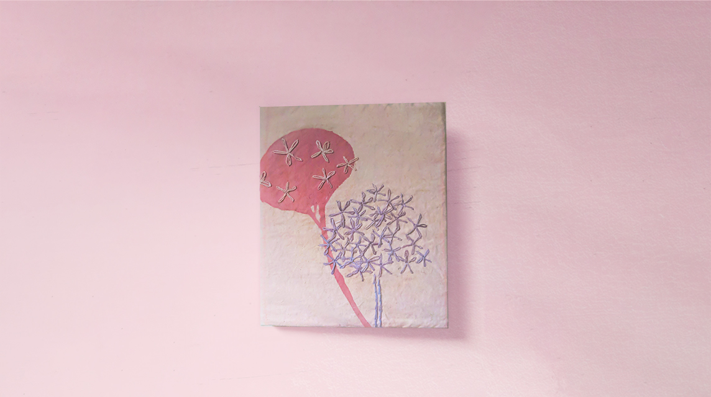
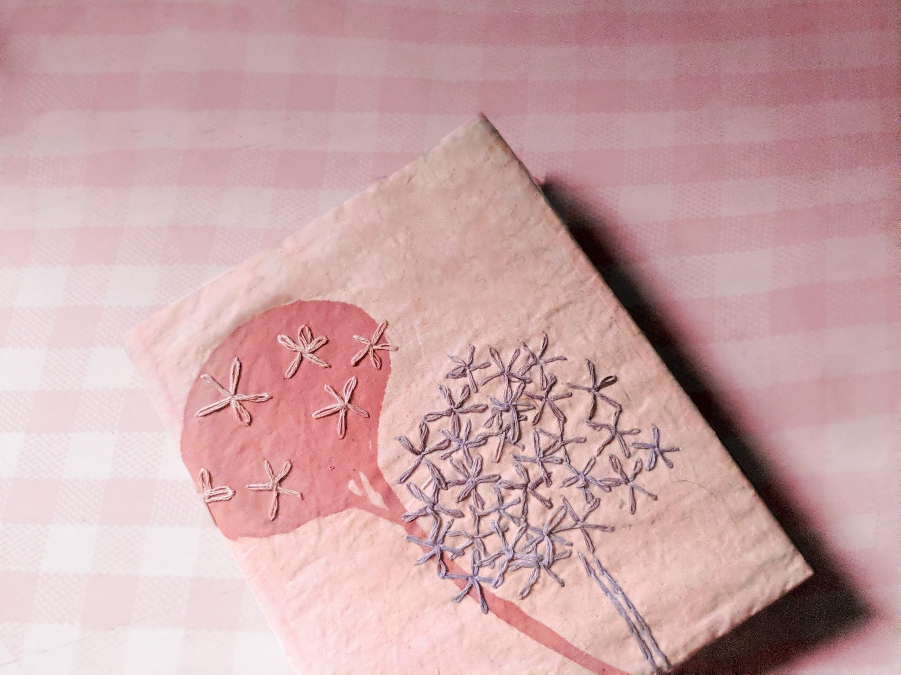
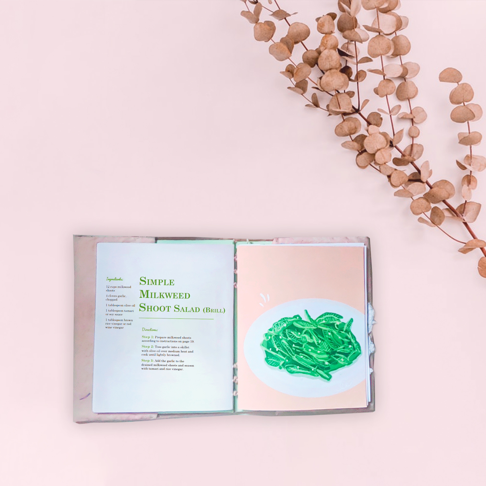
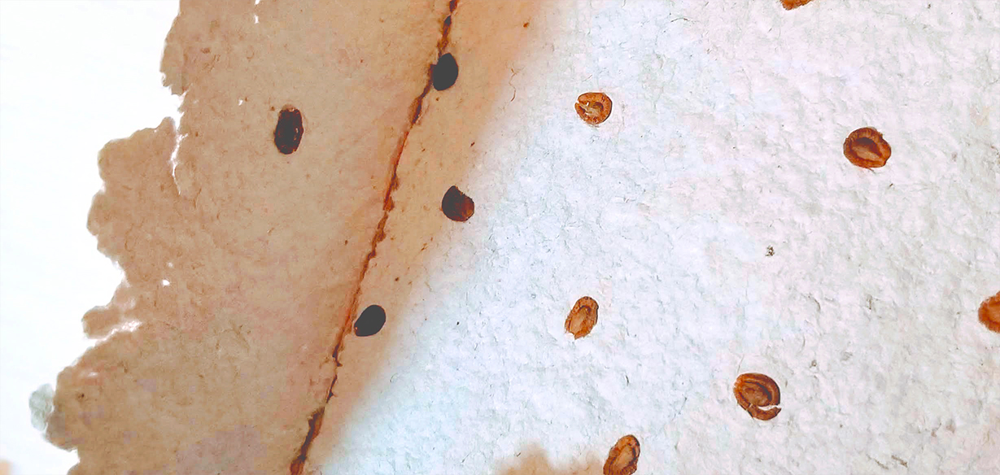
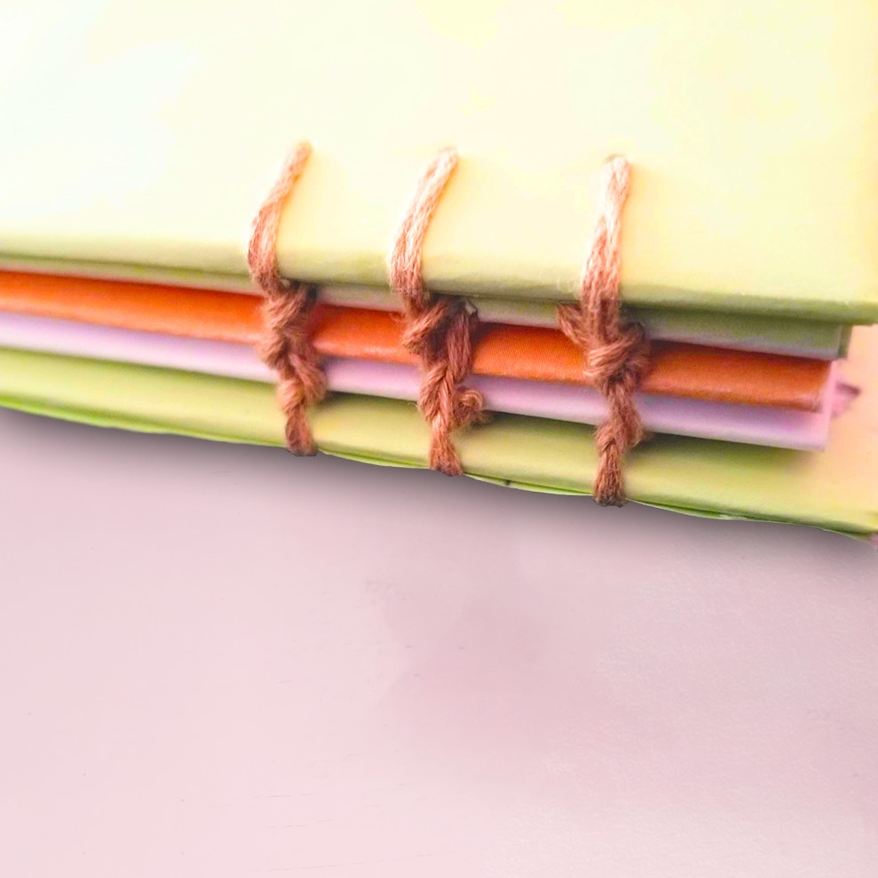

Designed by Mariam Aleila, Falé Do, Sharon Ku, and Leanne Suen Fa
In collaboration with three other talented designers, I designed a
sustainable cookbook that serves as an artifact to encourage the
cultivation of common milkweed. The book shared information about the
plant's cultural and historical importance, four milkweed recipes, and
steps on planting milkweed responsibly. Our aim was to strenghten the
relationship between milkweed and people by promoting milkweed as
a food source.



During the fabrication process, we were mindful of our waste
generation and placed an emphasis on slow design techniques,
such as sewing with a machine, hand-embroidering, bookbinding by hand,
dyeing the embroidery threads with food waste, and DIY printing with
natural inks. I bounded a paper embedded with milkweed seeds to the
cookbook. The paper was made from recycled magazines and can be
composted.

My contribution to the project was to create the cookbook's
illustrations, research milkweed, develop ideas for the book, bind the
book together, and document my part of the process. I used a
coptic-stitch bookbinding technique.

Below are spreads from the book that feature the delectable milkweed
recipes: